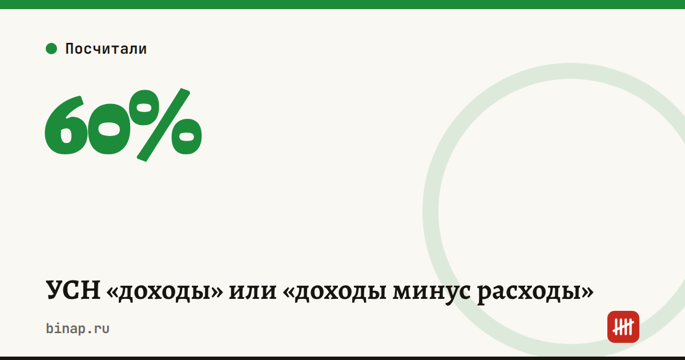

УСН «доходы» или «доходы минус расходы»

Есть простое правило: если расходы больше 60% доходов, «доходы минус расходы» обычно выгоднее.
Почему 60%. При 6% с доходов и 15% с разницы налог одинаковый, когда расходы составляют ровно 60% выручки. Пример: доход 1 млн ₽. На «доходах» налог 60 тыс. ₽. На «доходах минус расходы» при расходах 600 тыс. ₽ налог тоже 60 тыс. ₽: 15% от 400 тыс.
- УСН «доходы», 6%
- УСН «доходы минус расходы», 15%, но не меньше 1% дохода
Правее отметки 60% выгоднее «доходы минус расходы». Минимальный налог — 1% дохода.
Таблица с данными
| Доля расходов | «Доходы» 6% | «Доходы − расходы» 15% |
|---|---|---|
| 0% | 60 000 ₽ | 150 000 ₽ |
| 10% | 60 000 ₽ | 135 000 ₽ |
| 20% | 60 000 ₽ | 120 000 ₽ |
| 30% | 60 000 ₽ | 105 000 ₽ |
| 40% | 60 000 ₽ | 90 000 ₽ |
| 50% | 60 000 ₽ | 75 000 ₽ |
| 60% | 60 000 ₽ | 60 000 ₽ |
| 70% | 60 000 ₽ | 45 000 ₽ |
| 80% | 60 000 ₽ | 30 000 ₽ |
| 90% | 60 000 ₽ | 15 000 ₽ |
| 100% | 60 000 ₽ | 10 000 ₽ |
Но есть три поправки:
- На «доходах» налог можно уменьшить на страховые взносы — иногда до нуля у ИП без сотрудников.
- Регионы снижают ставки: где-то «доходы» — 1–4%, а «доходы минус расходы» — 5–10%.
- Расходы нужно подтверждать документами. Нет чеков — нет расходов.
Что сделать: посчитайте долю расходов за прошлый год и проверьте ставки своего региона. Сменить объект налогообложения можно только с нового года, уведомление подают до 31 декабря.